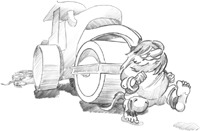
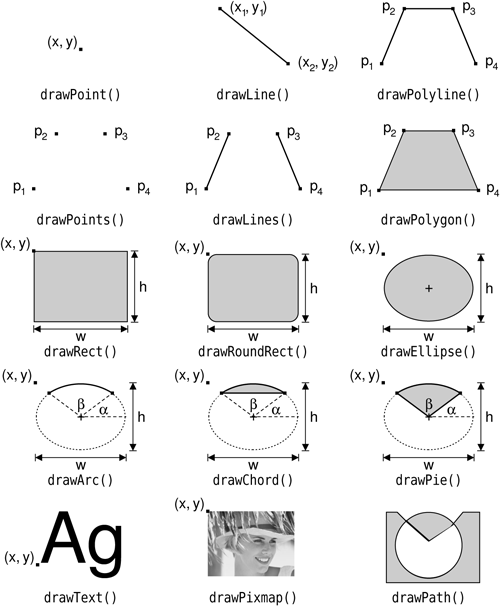
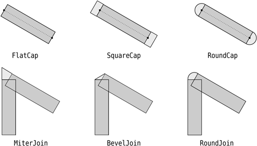
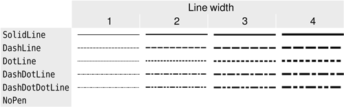
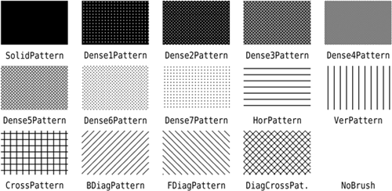
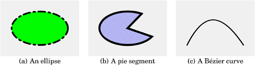
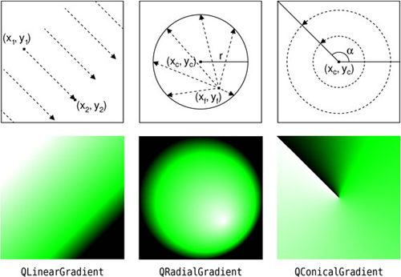

|
|

Qt's 2D graphics engine is based on the QPainter class. QPainter can draw geometric shapes (points, lines, rectangles, ellipses, arcs, chords, pie segments, polygons, and Bézier curves), as well as pixmaps, images, and text. Furthermore, QPainter supports advanced features such as antialiasing (for text and shape edges), alpha blending, gradient filling, and vector paths. QPainter also supports linear transformations, such as translation, rotation, shearing, and scaling.
QPainter can be used to draw on a "paint device", such as a QWidget, a QPixmap, a QImage, or a QSvgGenerator. QPainter can also be used in conjunction with QPrinter for printing and for generating PDF documents. This means that we can often use the same code to display data on-screen and to produce printed reports.
By reimplementing QWidget::paintEvent(), we can create custom widgets and exercise complete control over their appearance, as we saw in Chapter 5. For customizing the look and feel of predefined Qt widgets, we can also specify a style sheet or create a QStyle subclass; we cover both of these approaches in Chapter 19.
A common requirement is the need to display large numbers of lightweight arbitrarily shaped items that the user can interact with on a 2D canvas. Qt 4.2 introduced a completely new "graphics view" architecture centered on the QGraphicsView, QGraphicsScene, and QGraphicsItem classes. This architecture offers a high-level interface for doing item-based graphics, and supports standard user actions on items, including moving, selecting, and grouping. The items themselves are drawn using QPainter as usual and can be transformed individually. We cover this architecture later in the chapter.
An alternative to QPainter is to use OpenGL commands. OpenGL is a standard library for drawing 3D graphics. In Chapter 20, we will see how to use the QtOpenGL module, which makes it easy to integrate OpenGL code into Qt applications.
To start painting to a paint device (typically a widget), we simply create a QPainter and pass a pointer to the device. For example:
void MyWidget::paintEvent(QPaintEvent *event)
{
QPainter painter(this);
...
}
We can draw various shapes using QPainter's draw...() functions. Figure 8.1 lists the most important ones. The way the drawing is performed is influenced by QPainter's settings. Some of these are adopted from the device, whereas others are initialized to default values. The three main painter settings are the pen, the brush, and the font:

The pen is used for drawing lines and shape outlines. It consists of a color, a width, a line style, a cap style, and a join style. The pen styles are shown in Figures 8.2 and 8.3.


The brush is the pattern used for filling geometric shapes. It normally consists of a color and a style, but it can also be a texture (a pixmap that is repeated infinitely) or a gradient. The brush styles are shown in Figure 8.4.

The font is used for drawing text. A font has many attributes, including a family and a point size.
These settings can be modified at any time by calling setPen(), setBrush(), and setFont() with a QPen, QBrush, or QFont object.
Let's see a few examples in practice. Here's the code to draw the ellipse shown in Figure 8.5 (a):
QPainter painter(this); painter.setRenderHint(QPainter::Antialiasing, true); painter.setPen(QPen(Qt::black, 12, Qt::DashDotLine, Qt::RoundCap)); painter.setBrush(QBrush(Qt::green, Qt::SolidPattern)); painter.drawEllipse(80, 80, 400, 240);

The setRenderHint() call enables antialiasing, telling QPainter to use different color intensities on the edges to reduce the visual distortion that normally occurs when the edges of a shape are converted into pixels. The result is smoother edges on platforms and devices that support this feature.
Here's the code to draw the pie segment shown in Figure 8.5 (b):
QPainter painter(this);
painter.setRenderHint(QPainter::Antialiasing, true);
painter.setPen(QPen(Qt::black, 15, Qt::SolidLine, Qt::RoundCap,
Qt::MiterJoin));
painter.setBrush(QBrush(Qt::blue, Qt::DiagCrossPattern));
painter.drawPie(80, 80, 400, 240, 60 * 16, 270 * 16);
The last two arguments to drawPie() are expressed in sixteenths of a degree.
Here's the code to draw the cubic Bézier curve shown in Figure 8.5 (c):
QPainter painter(this); painter.setRenderHint(QPainter::Antialiasing, true); QPainterPath path; path.moveTo(80, 320); path.cubicTo(200, 80, 320, 80, 480, 320); painter.setPen(QPen(Qt::black, 8)); painter.drawPath(path);
The QPainterPath class can specify arbitrary vector shapes by connecting basic graphical elements together: straight lines, ellipses, polygons, arcs, Bézier curves, and other painter paths. Painter paths are the ultimate drawing primitive in the sense that any shape or combination of shapes can be expressed as a painter path.
A path specifies an outline, and the area described by the outline can be filled using a brush. In the example in Figure 8.5 (c), we didn't set a brush, so only the outline is drawn.
These three examples use built-in brush patterns (Qt::SolidPattern, Qt::DiagCrossPattern, and Qt::NoBrush). In modern applications, gradient fills are a popular alternative to monochrome fill patterns. Gradients rely on color interpolation to obtain smooth transitions between two or more colors. They are frequently used to produce 3D effects; for example, the Plastique and Cleanlooks styles use gradients to render QPushButtons.
Qt supports three types of gradients: linear, conical, and radial. The Oven Timer example in the next section combines all three types of gradients in a single widget to make it look like the real thing.
Linear gradients are defined by two control points and by a series of "color stops" on the line that connects these two points. For example, the linear gradient in Figure 8.6 is created using the following code:
QLinearGradient gradient(50, 100, 300, 350); gradient.setColorAt(0.0, Qt::white); gradient.setColorAt(0.2, Qt::green); gradient.setColorAt(1.0, Qt::black);

We specify three colors at three different positions between the two control points. Positions are specified as floating-point values between 0 and 1, where 0 corresponds to the first control point and 1 to the second control point. Colors between the specified stops are linearly interpolated.
Radial gradients are defined by a center point (xc, yc), a radius r, and a focal point (xf, yf), in addition to the color stops. The center point and the radius specify a circle. The colors spread outward from the focal point, which can be the center point or any other point inside the circle.
Conical gradients are defined by a center point (xc, yc) and an angle a. The colors spread around the center point like the sweep of a watch's seconds hand.
So far, we have mentioned QPainter's pen, brush, and font settings. In addition to these, QPainter has other settings that influence the way shapes and text are drawn:
The background brush is used to fill the background of geometric shapes (underneath the brush pattern), text, or bitmaps when the background mode is Qt::OpaqueMode (the default is Qt::TransparentMode).
The brush origin is the starting point for brush patterns, normally the top-left corner of the widget.
The clip region is the area of the device that can be painted. Painting outside the clip region has no effect.
The viewport, window, and world transform determine how logical QPainter coordinates map to physical paint device coordinates. By default, these are set up so that the logical and physical coordinate systems coincide. We cover coordinate systems in the next section.
The composition mode specifies how the newly drawn pixels should interact with the pixels already present on the paint device. The default is "source over", where drawn pixels are alpha-blended on top of existing pixels. This is supported only on certain devices and is covered later in this chapter.
At any time, we can save the current state of a painter on an internal stack by calling save() and restore it later on by calling restore(). This can be useful if we want to temporarily change some painter settings and then reset them to their previous values, as we will see in the next section.
|
|
| Converted from CHM to HTML with chm2web Pro 2.85 (unicode) |